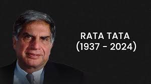

Ratan Naval Tata

Summary
Ratan Tata is a renowned Indian industrialist,
philanthropist, and former chairman of the Tata Group,
one of India’s largest and most respected conglomerates.
He is celebrated for his visionary leadership, ethical business practices,
and contributions to India’s economic development.
Early Life And Education
Born: December 28, 1937, in Bombay (now Mumbai), India
He studied at the Cathedral and John Connon School and later
attended Cornell University in the U.S., where he earned a degree
in architecture and structural engineering.
He also completed the Advanced Management Program at Harvard Business School.
Work Experience
Joined Tata Group (1961): Started his career at Tata Steel, working on the shop floor.
Chairman of Tata Group (1991-2012): Succeeded J.R.D. Tata as chairman and led the group to unprecedented growth.
Under his leadership:
- Tata Group expanded globally, acquiring companies like Jaguar Land Rover, Tetley Tea, and Corus Steel.
- Launched the Tata Nano, the world’s most affordable car, aiming to provide economical mobility for Indian families.
He stepped down as chairman in 2012 but remains active as Chairman Emeritus of Tata Sons.
Philanthropy
Ratan Tata is deeply committed to social causes, channeling the majority of Tata Group’s profits
into charitable trusts. His contributions focus on:
Education (e.g., scholarships for Indian students at international universities).
Healthcare and rural development.
Promoting sustainable development and innovation.
Awards and Honors
- Padma Bhushan (2000) and Padma Vibhushan (2008): India’s highest civilian awards.
- Honored by several international organizations for his contributions to business and philanthropy.